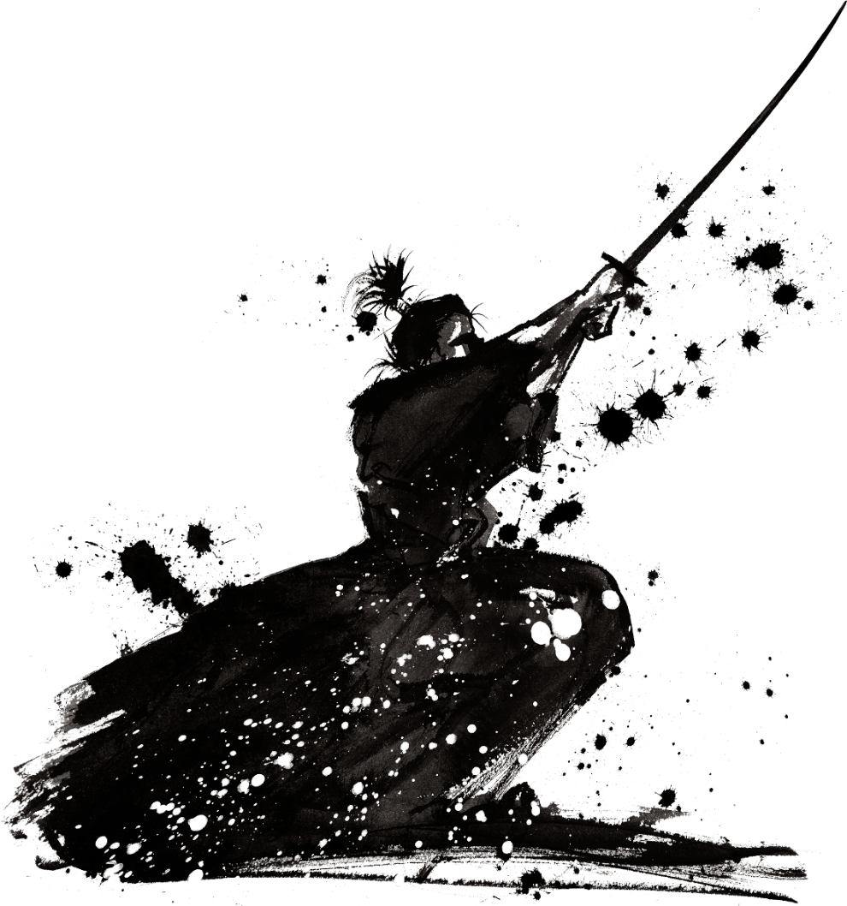

Используя приставку с окончанием, мы получаем разный смысл и слова соответственно с этим придется свыкнуться, но они не имеют особой сложности.
Новые слова:
ねこ - кот, кошкa
犬 - собака
Нам уже известное: 私 - Я
В разработке
Каждое место имеет свою "приставку", добавив к ним ней некоторые окончания и можно получить разные слова:
れ - обозначает "что-то, нечто" асбтрактную вещь.
これ - это (рядом со мной). Например, держа в руках книгу можно сказать: коре ва хон дес (это книга).
これは私の猫ですか - Это моя кошка? (рядом со мной)
これは私の犬ですか - Это моя собака? (рядом со мной)
それ - тоже "это", но уже у собеседника.
それは私の猫ですか - Это моя кошка? (кошка, что стоит рядом с говорящим)
それは私の犬ですか - Это моя собака? (кошка, что стоит рядом с говорящим)
あれ - то, далеко от обоих.
あれは私の猫ですか - Это моя кошка? (Равноудалена от меня и собеседника)
あれは私の犬ですか - Это моя собака? (Равноудалена от меня и собеседника)
どれ - которое ?
私の猫はどれですか？ - Которая(какая) кошка моя?
私の犬はどれですか？ - Которая(какая) собака моя?
の - обозначает конкретную вещь. どの - эта. Заметьте, не этО, а этА. коно хон - "эта книга", коре ва хон - "это - книга" その - эта (рядом с собеседником). соно хон ва манга дес ка? - эта книга (у вас) - манга? あの - та どの - которая? какая именно? доно хон дес ка? - какая книга.
Это японский, друг мой 